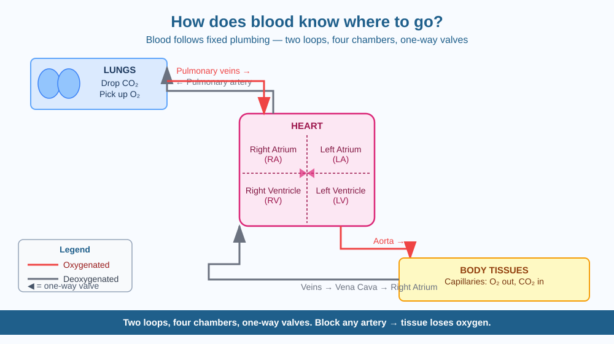

By the end of this lesson, you should be able to explain the two loops of blood circulation, name the key chambers and vessels involved, and predict what happens when a major artery is blocked.
Your heart beats about 100,000 times every day, pushing blood all the way to your toes, your fingertips, your eyes, and back again — without stopping, for your entire life. Blood always arrives at the right organ with oxygen and always leaves carrying carbon dioxide. Blood doesn't have a brain. How does it know where to go?
The short answer: blood doesn't "know" anything. It follows fixed plumbing.
Your circulatory system is a closed network of tubes called blood vessels. The heart pumps blood into these tubes, and the vessels branch and narrow to reach every tissue in the body — like a road system where blood is the traffic. Blood doesn't choose a direction; the direction is built into the structure of the vessels.
The heart and its four chambers:
The heart has four hollow spaces called chambers. Think of it as two pumps joined side by side:
Two circulation loops:
Loop 1 — Pulmonary circulation (heart ↔ lungs): Right ventricle → pulmonary artery → lungs (blood drops off CO₂ and picks up O₂) → pulmonary veins → left atrium.
Loop 2 — Systemic circulation (heart ↔ body): Left ventricle → aorta (the largest artery, about as thick as a garden hose) → arteries → arterioles → capillaries → venules → veins → right atrium.
Where the real exchange happens: Capillaries are microscopic — their walls are only one cell thick. O₂ and nutrients seep out through the capillary wall into the surrounding tissue cells. CO₂ and waste products seep back in. This exchange cannot happen in arteries or veins — only in capillaries.
Valves prevent backflow: The heart has four valves, one at each exit, that snap shut after every pump. Many veins also have valves inside them. These act as one-way doors: blood can only flow in one direction. Without them, gravity would pull blood backward in the veins of the legs.
What drives the flow: The heart's squeezing (contraction) creates blood pressure — the force that pushes blood around the circuit. Feel your pulse at your wrist: each pulse is one heartbeat sending a wave of pressure through the arteries.
Draw this circuit in your head as a figure-8 with the heart at the centre:
Body tissues → veins → Right atrium → Right ventricle → Pulmonary artery → Lungs (pick up O₂) → Pulmonary veins → Left atrium → Left ventricle → Aorta → Arteries → Capillaries (O₂ delivered, CO₂ collected) → Veins → Body tissues
Blood is always inside the closed circuit — it never spills out (unless there is a wound). Arteries generally carry oxygenated blood away from the heart. Veins carry deoxygenated blood back toward the heart. (The pulmonary artery and veins are the exceptions — they carry the opposite.)
The included SVG shows the circulatory system as a figure-8 diagram with the heart at the centre:

Coronary arteries are the blood vessels that supply the heart muscle itself with oxygen. They are relatively small — about 2–4 mm in diameter. The heart is always beating, so these arteries must always deliver oxygen without interruption.
Over decades, fat and cholesterol can slowly build up on the inner walls of these arteries (a process called atherosclerosis), narrowing the opening. If a piece of this buildup breaks off and blocks the artery completely, the section of heart muscle supplied by that artery stops receiving oxygen and begins to die within minutes.
Predict: If a coronary artery is 50% narrowed but not fully blocked, would you expect symptoms at rest? What might happen differently during exercise, when the heart muscle needs more oxygen?
What guides blood to the correct organs in the circulatory system?
Why is identifying the mechanism of blood circulation more useful than simply knowing blood travels around the body?
If a major artery supplying a muscle were blocked, what would you predict would happen?
Next time you visit a medical clinic or chemist, ask the pharmacist to explain how a blood pressure monitor works. Connect their explanation to what you learned today — specifically, what is being measured, why the reading has two numbers (systolic and diastolic), and what each number represents in terms of the heart's action.
Your body contains about 100,000 kilometres of blood vessels — enough to wrap around the Earth more than twice. The vast majority are capillaries, the tiniest vessels. Your capillary network is so dense that almost no cell in your body is more than about 0.1 mm from a capillary. Oxygen never has to travel far to reach a cell, which is why exchange is so fast and efficient.
Blood doesn't know where to go — it follows fixed plumbing. Two loops (one to the lungs, one to the body), four chambers, valves, and the heart's pressure keep the circuit running. Block any artery and the downstream tissue is immediately deprived of oxygen.